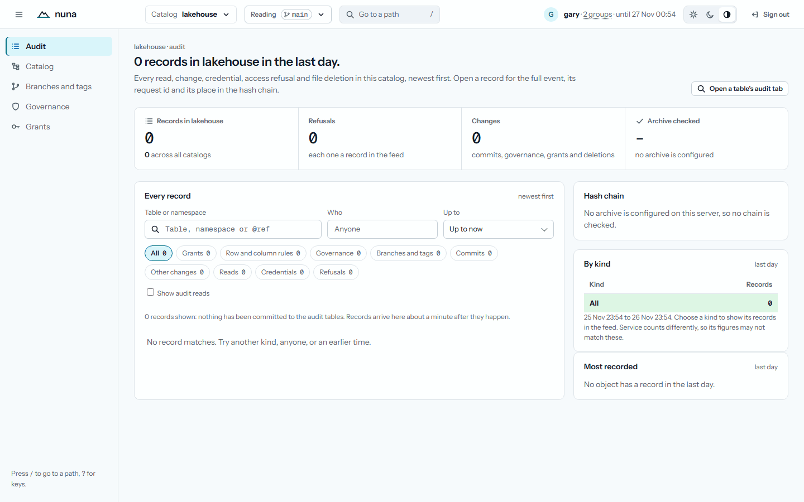

The Audit page
The Audit page answers, for auditors, what happened in a catalog: every read, change, credential, access refusal and file deletion, newest first, with each record's full event, its request id and its place in the hash chain.

Who sees it
The feed, the summary, the archive status and the chain check all need select on the audit tables' catalog (nuna.audit.tables.catalog); a refusal is audited. Where no audit catalog is configured they answer 503: "The audit tables are not configured on this server (nuna.audit.tables.catalog)". The rail also shows Audit to those who manage the catalog's grants: when the feed refuses them, the page shows the refusal and, under catalog itself, the catalog's own trail (Records about catalog), which needs manage-grants.
The head and figures
The title is N records in catalog in the last day. "Every read, change, credential, access refusal and file deletion in this catalog, newest first. Open a record for the full event, its request id and its place in the hash chain." Open a table's audit tab goes to one table's trail.
Four figures: Records in catalog, Refusals, Changes ("commits, governance, grants and deletions") and Archive checked, which reads no archive is configured, the first check runs a minute after start, the archive is not intact: see Hash chain, records are missing: see Hash chain or N server runs whole.
Every record
The feed reads the audit tables. Filter by Table or namespace (a path, or @ref), Who, Up to (Up to now, Before an hour ago, Before six hours ago, Before a day ago, Before a week ago) and kind. Reads of the audit itself are hidden until you select Show audit reads. The filters are kept in the page's address, so a link opens the same view.
The status line reads "N records shown, newest first, as of the last commit at HH:MM." and "Records arrive here about a minute after they happen." When the audit tables have no commit yet: "N records shown: nothing has been committed to the audit tables." Show the next 50 or Search further back loads more; at the end, "Every matching record the audit tables hold is shown. Older ones are in your SIEM and the archive." With no match: "No record matches. Try another kind, anyone, or an earlier time."
A record
Each row carries a chain pill: Chain verified, Missing from archive, Earlier record missing or Not verified yet. Opening it shows the full event, its Request id, where it was Read from (a Kafka partition and offset, or "the log nuna.audit, record N of server run R") and its hash chain line, such as "verified by the check at time, with every earlier record of its server run" or "no archive is configured".
Check this record asks the server for the record's place in its server run's chain: Hash matches or Hash does not match, the previous, this and next hashes, and the archive segment; or Not archived yet.
Hash chain
The panel Hash chain, checked hourly, shows Not checked yet, Not intact, Records missing or Whole at HH:MM, with Runs, Each record ("hashes the one before it in its server run, and carries its number in the run"), Checkpoints, Archive and Last check, and any findings. Without an archive: "No archive is configured on this server, so no chain is checked."
By kind and Most recorded
By kind counts the last day's records by kind; choose one to show its records in the feed. "Service counts differently, so its figures may not match these." Most recorded lists the objects with the most records, their reads and who wrote to them most. Empty: "No object has a record in the last day."
From the command line
| On the page | Endpoint |
|---|---|
| Every record, with its filters | GET /management/v1/catalogs/{catalog}/audit/feed (Audit) |
| The figures, By kind, Most recorded | GET /management/v1/catalogs/{catalog}/audit/summary (Audit) |
| Archive checked; Hash chain | GET /management/v1/audit/archive (Audit) |
| Check this record | GET /management/v1/audit/chains/{run}/records/{number} (Audit) |
| Records about the catalog | GET /management/v1/catalogs/{catalog}/audit (Audit) |
See also
- The audit trail: what is recorded and what "verified" means.
- Query the audit trail: the feed over the API and the audit tables from SQL.
- Verify the audit chain: one record's place in the chain.
- Audit record format: fields and record types.
How this page was checked
Written from the console's audit.js and panels.js, and from AuditReadRoutes.java, checked against commit b3e8582f on 2026-11-26.
The console was not driven in a browser. The demo's summary and archive status were read with GET requests: no archive is configured there.